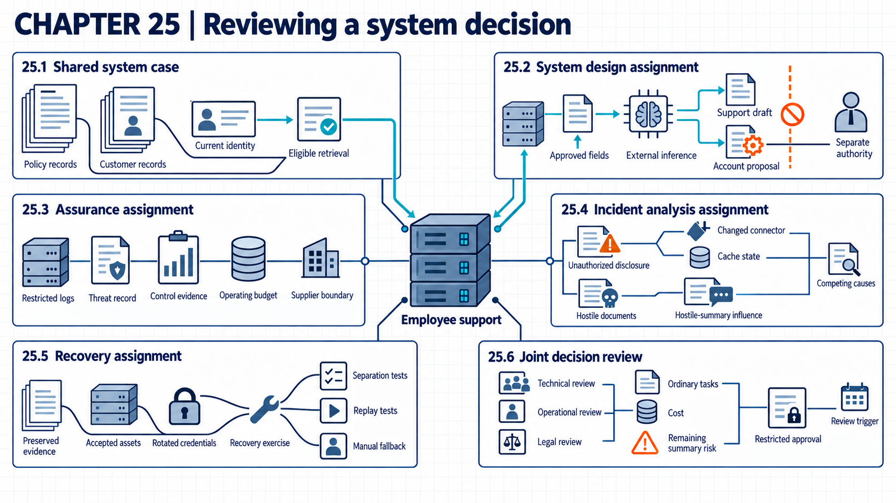

25 Capstone: defending a system decision
A whole system review connects architecture, data, model and platform controls, authority, assurance, recovery, cost, and accountability in one decision.
A decision to deploy an AI system has to hold up in front of readers who ask different questions. Management asks what it costs and what it returns. Legal reviewers ask which duties apply. Operations asks how the service recovers, and the people affected ask what happens to them when it fails. If each reviewer pictures a different system, their answers cannot be compared, and a weak claim can pass because nobody checked it against the same facts.
Suppose an organization runs one employee support assistant and later has one incident with it. The organization and the incident are invented for this capstone. Their facts are fixed so that different designs can be compared, and facts that stay uncertain are marked as research or testing needs. One case joins architecture, data, model and platform controls, authority, assurance, recovery, cost, and responsibility, so technical and management reviewers judge the same decision.

25.1 Capstone system and assumptions
A capstone becomes unreviewable when each participant assumes a different system. A shared case is one fixed invented system used across several assignments.
The AI Risk Management Framework1 calls for intended purpose, context, users, requirements, task, and system assumptions to be understood and documented before risk is measured and managed. The framework does not supply this scenario. Each statement below is a case fact: an assumption supplied by the exercise rather than inferred by the reader. None is a claim about a real organization.
The organization operates an employee support assistant. It retrieves internal policy and customer records, uses an external model service, and can prepare but cannot approve account changes. Five hundred employees use it. Customer data stays within approved regions. The operating budget, which fixes the resources available for deployment and control work, is 600,000 currency units a year. The system needs a manual support fallback and a tested two-hour recovery objective. The recovery clock starts at the simulated interruption and stops when the approved automated workflow is usable again. Model version M3 is fixed during the supplied tests: retrieval and inference do not update its parameters. Customer data is not used for local training or fine-tuning in this case. Supplier retention and reuse terms remain evidence to request, not assumptions of permission. These facts fix the boundary for the design assignment.
25.2 System design and threat model
A defensible design connects each control to a stated asset, attacker capability, and consequence. Those three come from a threat model, which states attacker goals, access, knowledge, limits, and target assets.
Guidelines for Secure AI System Development2 puts threat modeling, model choice, and secure design across the lifecycle. It also covers asset tracking, supply chain controls, deployment protection, incident procedures, and secure operation. The AI Risk Management Framework3 also connects task, requirements, human oversight, legal and third-party risk, security evaluation, deactivation authority, and supplier monitoring. These sources identify work to cover. They do not determine the correct capstone architecture.
The assignment produces a system map, which identifies components, actors, stores, trust boundaries, and data or action flows. It can be a diagram or a structured record of the request, retrieval, model, output, proposed action, authorization, logging, and support paths. It states why each identity and permission exists, which component enforces each limit, and what evidence would show failure. Each control tradeoff records both the benefit and cost created by a security choice. The result is a testable design rather than an assertion of safety. Its claims and permissions become the input to assurance.
Learner packet and deliverables. The learner receives the case facts in the preceding section, the staged evidence in the next three sections, and the 600,000 currency-unit budget. Every number is invented. The completed packet contains five linked deliverables:
- System and data map: users, application, identity service, policy index, customer-record connector, external model service, action proposal, approval service, logs, supplier boundary, and manual support path.
- Threat record: one request-only attacker and one attacker-edited retrieved document. It also contains one compromised connector. Each entry states access, target asset, unwanted outcome, entry point, and evidence that would confirm or reject the path.
- Control table: the enforcing component, input, decision, allowed result, denied result, log record, bypass test, and recovery action for retrieval and account-change controls.
- Deployment and cost record: hosted and self-hosted options evaluated under the same task, permissions, acceptance thresholds, service requirements, and cost units.
- Responsibility record: the roles for retrieval eligibility and account-change approval. It also states the supplier duty, the residual-risk authority, open legal questions, and the review trigger.
The learner assigns a stable identifier to every component, claim, test, and decision. A control row must point back to a threat path and forward to an assurance case. A cost entry without a period and unit remains incomplete. This structure ties each later conclusion to the fixed case rather than to an unstated system.
Whole-book coverage record. The capstone does not force every earlier mechanism into this case. For each branch, the learner records applied, not applicable with a reason, or requires new evidence.
| Earlier branch | Capstone question |
|---|---|
| Data use and training influence | Does this system train, fine-tune, retain, or reuse case data? Which earlier controls apply? |
| Query disclosure | Which outputs could disclose private records or training data? Which query patterns could reveal model behavior? |
| Adversarial inputs | Which input changes are feasible for this task, and has the matching evaluation been run? |
| Artifact, platform, and runtime trust | Which acquired components and operating layers enter the trusted path? |
| Text from untrusted sources, retrieval, and actions | Identify the content that can influence output. Record the permitted context and the service that authorizes an action. |
| Release, monitoring, incident, and recovery | Which tests, live records, response paths, and restoration checks support the decision? |
| AI-assisted attack or defense | Is AI use in cyber work part of this system, outside scope, or a separate evidence question? |
| Adoption, responsibility, cost, and changed settings | Who authorizes the decision, what does it cost, and which sector or technical change reopens it? |
This record exposes an omitted branch while recognizing that some branches do not apply. Its status and reason become part of the final review.
25.3 Testing the claims
A design claim becomes credible only when the test matches its conditions. An assurance claim is a specific statement about behavior or risk supported by reviewable evidence.
The AI Risk Management Framework4 calls for validity and reliability under expected conditions and for security and resilience to be evaluated and documented. NIST measurement guidance5 states that a measure includes its data source, calculation, collection timing, responsible parties, and reporting context. It separates whether controls were put in place, whether they work, what resources they consume, and what outcomes they change. The capstone still needs its own cases, sample size, and release threshold.
The assignment combines ordinary tasks, adversarial retrieval content, cross-customer access attempts, tool-permission tests, supplier failure, and recovery exercises. Each test records inputs, model and application versions, intermediate decisions, expected result, observed result, and uncertainty. A pass supports only the stated claim under those conditions. The incident assignment can then expose contradictions and missing evidence against these records.
Example
Staged assurance evidence. The following exercise results were created for this capstone. They are not research findings or results from a real system.
| Evidence stage | Operating mode and task | Input and reference | Intermediate state | Observed result | Initial conclusion |
|---|---|---|---|---|---|
| A: ordinary retrieval | Inference, answer employee questions | 40 synthetic questions with approved source passages | Identity check, eligible-document filter, retrieved source identifiers | 36 accepted answers and 4 corrected answers | Useful quality is plausible, but correction cost remains |
| B: customer separation | Inference, attempt cross-customer retrieval | 12 requests from employees without access to the target customer | 11 requests denied before retrieval, 1 record returned after a connector cache reused an earlier scope | 1 unauthorized disclosure | Separation claim fails |
| C: hostile documents | Inference, summarize injected documents | 10 documents with instructions in their text and a clean reference summary | Retrieval, context assembly, model output, proposed-action gate | 2 summaries follow the hostile text, 0 account actions execute | Output-integrity claim fails, action boundary passes these cases |
| D: service recovery | Recovery, restore the approved system | Supplier outage and a two-hour target | Manual path starts at 18 minutes, automated restoration completes at 145 minutes | Manual support continues, automated target missed by 25 minutes | Continuity is partial and the recovery objective fails |
The learner can calculate the cross-customer failure rate as 1 divided by 12 for this small exercise set. That result is about 8.3 percent, but the small, constructed sample does not estimate a production rate. Stage B blocks release because its acceptance threshold, the measured result required by an acceptance criterion before a test passes, is zero unauthorized records in the stated test. Stage D also fails its stated two-hour objective. These results define the evidence that the incident and recovery work must explain.
The test runner enforces this. It checks the fixed configuration, case identifiers, expected result, observed result, and acceptance threshold before it issues a pass. It reports failures against the full assigned set for each test, never only against successful responses. Running adversarial cases, review, and fallback exercises consumes model, infrastructure, and staff time. Incomplete logs, changed versions, or cases that omit a real attack path can produce weak evidence. A failed mandatory criterion blocks release. For a changed system already operating, a rollback trigger is a specified condition requiring return to an earlier accepted configuration or manual path. The original output-integrity claim also fails in Stage C. A later proposal may narrow use to reviewed drafts, but only through an explicit new decision that records the unresolved finding.
25.4 Incident analysis
The incident begins with a customer record shown to the wrong employee after a retrieved document contains hostile instructions. Logs also show a recent connector change. Authorization failure could explain how the record entered the model context, while prompt injection could explain how its text affected the answer. The investigation tests both paths rather than assuming one excludes the other. Responders identify affected users, systems, data, actions, and time while preserving available evidence and containing further exposure. Urgent containment can precede complete evidence collection, and responders record any evidence lost when system state changes.
NIST incident-response guidance6 calls for event sequencing, root-cause analysis, recorded response actions, protected evidence, and an estimate of incident scope. The NIST incident-response guidance7 also calls for containment and eradication and includes suppliers in planning, response, and recovery where relevant. These outcomes do not identify the cause or select one containment action for this case.
The assignment builds a timeline from application, identity, retrieval, model, connector, and supplier records. It separates direct observations from inferences and lists evidence that would reject each explanation. Containment may disable the affected connector and restrict retrieval. It may also revoke credentials or suspend the assistant while keeping the manual path. The resulting scope, changes, and unresolved uncertainty define the recovery work.
Example
Staged incident evidence. All times and records below belong to the invented case.
| Time | Direct observation | Current interpretation | Evidence still needed |
|---|---|---|---|
| 08:40 | Connector version changed from K6 to K7 | Connector change may explain the wrong retrieval | Change approval, cache behavior, and regression results |
| 09:12 | Employee E17 requests customer C44, which is outside the employee’s current scope | The request should have been denied | Current role and token scope |
| 09:12 | Retrieval log records document D441 from C44 | Retrieval separation failed | Filter decision and connector query |
| 09:12 | D441 contains text instructing the assistant to ignore access limits | Prompt injection could affect output | Assembled context and model output |
| 09:13 | The assistant displays a C44 account detail | Unauthorized disclosure occurred | Exact source span and response record |
| 09:14 | The action log contains no account-change approval or execution | No executed account action is observed | Completeness of approval and action logs |
The incident lead immediately disables connector K7 and preserves its logs and configuration. The service credential is revoked, and users move to manual support. The main explanations are hostile document influence, connector authorization failure, or both. The hostile text explains why the output may have followed an instruction. It does not by itself explain how C44 entered the eligible set. The connector records and cache test are necessary before assigning the root cause. In the supplied follow-up test, K7 returns C44 under the cached scope even when the hostile instruction is removed, while K6 denies the same E17 request. This supports a connector authorization failure on that path. A separate replay with documents the employee may read still produces the two hostile-summary failures. The access repair therefore does not close the output-integrity finding. These follow-up results are additional invented case evidence, not findings about a real product.
Incident control. Before narrowing scope, the incident lead checks affected identities, customers, records, connector versions, actions, and time range. The lead authorizes containment under the response plan. Responders preserve evidence where possible and record losses caused by urgent containment. Coverage is examined customer-record accesses divided by all accesses through K7 during the suspected period, with missing logs recorded. Manual support and evidence preservation add service delay and staff cost. Incomplete supplier logs or another connector can hide part of the incident. Containment limits further exposure, but it does not establish the root cause or the full affected population. So recovery isolates K7 and rotates its credential, and the competing explanations are tested before restoration.
25.5 Recovery and retesting
Restoring service is not the same as starting an old copy. NIST’s incident-response profile8 calls for recovery actions and backup-integrity verification before restoration. It also calls for checks on restored assets and documentation of completion against incident criteria. Guidelines for Secure AI System Development9 recommends versioning models, data, prompts, software, and related records so they can be restored to a known-good state. A recorded version still needs integrity and suitability checks before reuse.
The assignment selects a restoration point, the specific known-good state selected for rebuilding or recovery. It identifies the configurations, index, software, and credentials that need restoration or replacement. Incident logs remain preserved as evidence rather than being overwritten with old copies. Secrets need credential rotation, which replaces authentication material and revokes the old material. The assignment then retests authorization and customer separation and verifies the manual fallback. Any unresolved risk enters the final record.
Example
Executable recovery trace. The recovery target is connector K6 with policy index P12, application A4, fixed model M3, and a new service credential. The rerun includes the same supplier-outage scenario as Stage D as well as the connector rollback, so its duration addresses the earlier recovery objective. The learner records each step and result:
- Preserve K7, its cache, identity decisions, retrieval records, and hashes as incident evidence.
- Restore K6, P12, and A4 in an isolated environment with model M3. Verify the recorded versions before use.
- Rotate the connector credential and verify that the old credential is rejected.
- Replay the 12 customer-separation cases, including E17 requesting C44. The required result is 12 denials and no returned customer record.
- Replay the 10 hostile-document cases. The action service must continue to reject every unapproved account action. Output failures remain separate findings.
- Repeat Stage A’s 40 ordinary questions with the same permitted source passages and reference answers. Verify that the current employee permissions admit the required passages, inference completes, and an answer returns for every question. Record accepted answers and answers needing correction separately. Denying every request cannot pass this check.
- Repeat the supplier-outage exercise. Record interruption time and manual-path start. Mark automated return only after both the denial tests and the ordinary-task checks above have completed. Test the two-hour objective against that full interval.
In the exercise rerun, all 12 separation cases are denied, the old credential fails, and no account action executes. All 40 ordinary requests retrieve only their permitted passages and return an answer through the restored path. Comparison with Stage A’s reference answers gives 36 accepted answers and four requiring employee correction before use. These supplied results show that permitted work still completes, while preserving the earlier quality limitation. For the repeated outage test, manual support starts at the interruption and remains active until these checks finish and the automated workflow returns after 92 minutes. The intermediate records link each result to K6, P12, A4, M3, and the new credential. The recovery test now meets its stated thresholds. It does not resolve why two hostile documents changed summaries, and it does not show that untested customers or attacks are safe.
These results form the return-to-service evidence: checks showing that the specified recovery and acceptance conditions are met. The recovery lead checks artifact identity, credential rejection, all 12 separation cases, all 10 action cases, completion and answer review for all 40 ordinary requests, fallback readiness, and the two-hour objective. These checks establish technical readiness in the exercise environment. Operational return also requires the authorized scope, legal basis, and funding decision described below. The report keeps failures over the full assigned sets and records manual-support hours during recovery. Keeping standby staff and an accepted restoration point raises ongoing cost. Hidden retained data, an untested connector path, or a shared dependency can defeat the restored boundary. A later failure pauses service and returns work to manual support. The unresolved hostile-summary finding stays open and enters the joint decision.
25.6 Deployment decision and conditions
Technical evidence, business value, legal duty, cost, and affected-person impact can point in different directions. A joint decision review brings technical and organizational roles to the same proposal and evidence.
The AI Risk Management Framework10 assigns executive leadership responsibility for AI risk decisions. It connects priorities, resources, response, monitoring, and continual improvement across GOVERN and MANAGE. CSF 2.011 is intended to help executives, managers, technical staff, risk staff, lawyers, and auditors communicate through common cybersecurity outcomes. A common structure does not guarantee agreement or make the decision correct.
The review records one of four outcomes: continue, limit, redesign, or stop. Continue approves the current use and controls with no change. Limit keeps use inside a narrower permission or scope. Redesign sends the system back for a new control or test before any return. Stop halts the use. Each outcome lists conditions, due dates, unresolved evidence needs, and any accepted risk: specified remaining risk approved by an authorized role. The grading and role-weighting method was created for this exercise and still needs piloting. It is not presented as an empirically validated decision process.
The completed record is a reviewable whole-system decision with an explicit list of what remains uncertain. The choice joins the sector and technical branches from Chapter 23 (Adapting controls across sectors) and Chapter 24 (Reassessing security after technology changes). The original 1-in-12 customer-separation failure blocks the stated release condition in every setting. Manual review of an answer cannot undo a disclosure that already occurred. A restricted recommendation becomes possible only after the K6 rerun closes that tested access failure and shows that permitted retrieval and inference still complete. The separate hostile-summary finding may support nonconsequential drafts under review, subject to authority, legal, and cost conditions. A change to edge or federated operation from Chapter 24 also reopens the technical evidence even if the sector stays the same.
Scoring rubric. The rubric checks the completeness and reasoning of the capstone packet. It is an instructional scoring method without empirical validation as a safety score.
| Area | Full-credit evidence | Points |
|---|---|---|
| System and data map | Complete request, retrieval, model, action, log, supplier, and fallback paths with operating roles | 15 |
| Threat reasoning | Attacker access, target, consequence, entry point, competing explanation, and evidence need | 15 |
| Control reasoning | Enforcing component, decision input, bypass test, failure result, and recovery link | 15 |
| Assurance | Comparable cases, expected and observed results, thresholds, versions, limits, and correct calculations | 20 |
| Incident and recovery | Evidence-preserving timeline, scoped containment, competing causes, executable restoration, and return-to-service results | 15 |
| Deployment and cost | Comparable task and permissions, full annual cost, accepted-work unit, service limits, and exit condition | 10 |
| Responsibility and final decision | Decision authority, supplier and organization duties, accepted risk, conditions, due dates, and unresolved questions | 10 |
| Total | 100 |
Missing reasoning loses credit even in a polished submission. This includes a diagram without an explanatory record, a control without an enforcing component, a test without an expected result, or a conclusion that reaches beyond its evidence. Each score comes with explanatory feedback, which states the evidence and reasoning behind an assessment.
Example
Annotated decision. The review board recommends restricted use of the restored K6 configuration, conditional on the missing legal and cost reviews. This is not yet permission to resume live customer-data processing. The record distinguishes technical results, preconditions for use, and remaining risks:
- Proposed task: nonconsequential employee-support drafts using policy and eligible customer records, with employee review before reliance. This matches the tested inference mode and excludes business decisions based solely on a generated answer.
- Action limit: the assistant may prepare an account-change request but cannot approve or execute it. Stage C supports this boundary only for the ten tested hostile documents.
- Required configuration: connector K6, policy index P12, application A4, model M3, and the rotated credential. The recovery rerun is tied to these versions.
- Accepted risk: summaries can still follow hostile document text. The authorized risk role may accept this only for nonconsequential drafts under employee review, with a due date for a stronger output test and control. Acceptance does not waive a legal duty or authorize the failed access path.
- Rejected expansion: autonomous account action and connector K7 remain outside approval. The evidence does not support either change.
- Review conditions: any connector, permission, model, data-region, or action change reopens the decision. A customer-separation failure or recovery time above two hours pauses the service.
- Conditions before live use: the legal reviewer must confirm the permitted data use, regions, supplier terms, and remaining duties. The budget owner must approve a cost record within 600,000 currency units per year, including review, model service, monitoring, standby support, recovery, and exit. No cost totals are supplied in the case, so affordability has not been established.
- Open evidence: the organization still needs broader customer-separation cases, a supported hostile-document evaluation, and practical supplier-exit evidence. Each has a responsible role and due date in the learner’s completed record. Any item required for the proposed use remains a release blocker until resolved.
The decision follows from the staged evidence, not from a claim that the system is safe in general. It identifies a useful task within the technically recovered boundary while holding live use until its remaining preconditions are satisfied. Failed or untested claims remain outside the recommendation.
If the authorized reviewers later approve live use, that approval stays valid only while its conditions hold. At each review trigger, the service owner checks the required configuration, customer-separation result, recovery time, action log, supplier notice, and open hostile-summary finding. The owner records one of the four outcomes. Measures use failures over all cases or actions in the stated period and include manual-support cost. The incident trace shows the bypass this check must block. The follow-up test showed that K7 reused an earlier authorization scope for employee E17 and returned the wrong record. This bypassed the current access decision. The evidence does not measure any latency or cost saving from that bypass. A missing notice, incomplete log, or decision outside the review path can keep a stale approval alive. Continue does not extend to a new connector, model, region, permission, or action. In that case recovery invokes the manual route and restores the accepted configuration. The affected evidence stages then repeat, with recovery cost counted as standby staff and the 92 minute manual-support window.
Note
Chapter checkpoint. A learner scores 92 points but recommends full autonomous account changes because the action service blocked all ten hostile-document attempts. Is the recommendation defensible?
Answer. No. The tested action boundary is supported only for the current configuration and case set. The evaluation omits autonomous approval and broader attacks. It also omits mistaken ordinary requests and recovery from a harmful action. The recommendation also conflicts with the fixed case, which allows preparation but not approval. The score cannot override a failed scope argument. A defensible decision keeps autonomous action outside approval and states the evidence required to reconsider it.
A team can defend an AI system decision when it states the system and its assumptions. Each risk must link to an enforcing component and a test. Every conclusion must stay within the available evidence, with decision authority, measurement, cost, and a recovery route recorded. The trace from request to current identity and access checks, then eligible retrieval, model output, and the action gate shows where cost, bypass, and recovery apply. When the model, data, operator, access, task, or consequence changes, the affected branch of the record needs review again through continue, limit, redesign, or stop.
Elham Tabassi, Artificial Intelligence Risk Management Framework (AI RMF 1.0), NIST AI 100-1 (2023), Table 2, MAP 1.1 through MAP 1.6 and MAP 2.1, printed p. 26, source.↩︎
UK National Cyber Security Centre, CISA, and international partners, Guidelines for Secure AI System Development, version 1.0 (November 27, 2023), lifecycle overview, printed p. 8, and sections 1–4, pp. 9–16, source.↩︎
Elham Tabassi, Artificial Intelligence Risk Management Framework (AI RMF 1.0), NIST AI 100-1 (2023), Tables 2–4: MAP 1.6 and 2.1, printed p. 26. MAP 3.5 and 4.1, p. 27. MEASURE 2.7, p. 30. MANAGE 2.4, 3.1, and 3.2, p. 32, source.↩︎
Elham Tabassi, Artificial Intelligence Risk Management Framework (AI RMF 1.0), NIST AI 100-1 (2023), Table 3, MEASURE 2.5 and MEASURE 2.7, printed pp. 29–30, source.↩︎
Katherine Schroeder, Hung Trinh, and Victoria Yan Pillitteri, Measurement Guide for Information Security: Volume 1, Identifying and Selecting Measures, NIST SP 800-55v1 (2024), section 3.1.1, printed pp. 12–14, and sections 3.3.1–3.3.4, pp. 17–18, source.↩︎
Alex Nelson, Sanjay Rekhi, Murugiah Souppaya, and Karen Scarfone, Incident Response Recommendations and Considerations for Cybersecurity Risk Management: A CSF 2.0 Community Profile, NIST SP 800-61 Rev. 3 (2025), section 3, Table 3, RS.AN-03, RS.AN-06, RS.AN-07, and RS.AN-08, printed pp. 28–30, source.↩︎
Alex Nelson, Sanjay Rekhi, Murugiah Souppaya, and Karen Scarfone, Incident Response Recommendations and Considerations for Cybersecurity Risk Management: A CSF 2.0 Community Profile, NIST SP 800-61 Rev. 3 (2025), section 3, Table 2, GV.SC-08, printed p. 15, and Table 3, RS.MI-01 and RS.MI-02, pp. 32–33, source.↩︎
Alex Nelson, Sanjay Rekhi, Murugiah Souppaya, and Karen Scarfone, Incident Response Recommendations and Considerations for Cybersecurity Risk Management: A CSF 2.0 Community Profile, NIST SP 800-61 Rev. 3 (2025), section 3, Table 3, RC.RP-01 through RC.RP-06, printed pp. 34–35, source.↩︎
UK National Cyber Security Centre, CISA, and international partners, Guidelines for Secure AI System Development, version 1.0 (November 27, 2023), section 2, “Identify, track and protect your assets,” printed pp. 12–13, source.↩︎
Elham Tabassi, Artificial Intelligence Risk Management Framework (AI RMF 1.0), NIST AI 100-1 (2023), Table 1, GOVERN 2.3, printed p. 23, and Table 4, MANAGE 1 through MANAGE 4, pp. 32–33, source.↩︎
Cherilyn Pascoe, Stephen Quinn, and Karen Scarfone, The NIST Cybersecurity Framework (CSF) 2.0, NIST CSWP 29 (2024), Abstract and Audience, printed p. i, and section 1, pp. 1–2, source.↩︎